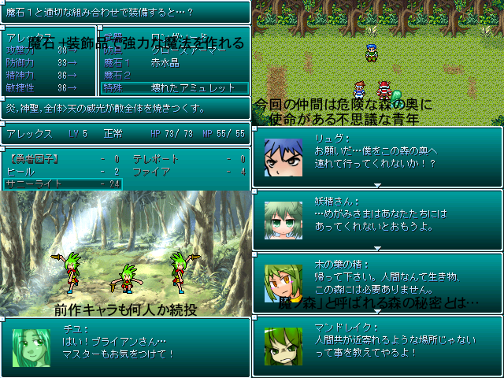

| |
 |
|
| 作者：大富豪の大貧民役 | |
| ツクール：2000 | |
| 作者コメント： 水晶の畑での異変から数ヶ月、再びアレックスに王様から依頼が届いた。 今回は近づけば人間を襲う「魔の森」の調査、 及び危険と判断した際は危険排除という内容であった。 念願のMP増量に加え、精霊を従えて調子に乗ってるブライアンを連れて調査に向かうが、 そこで倒れていた不思議な青年と出会うことにより、 アレックスとブライアンは魔の森の奥に眠る森の真実を探しに行く事になる… GW2014の「アレブラと精霊たち」の続編です 皆が満足できるようパワーアップさせていきます |
|
| 管理人コメント： 魔法が使えるブライアンが見れるのはここだけ！…でもないか |
|
| ダウンロード(10.2MB 09/17更新) / 感想掲示板 | |
| 前の作品 / 次の作品 / TOPへ戻る | |